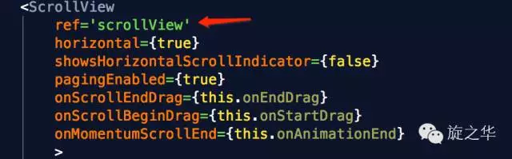
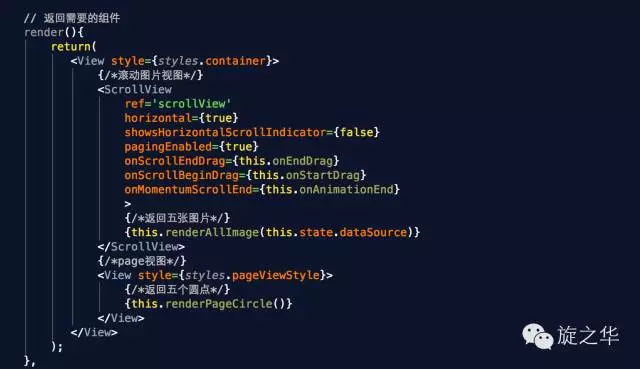
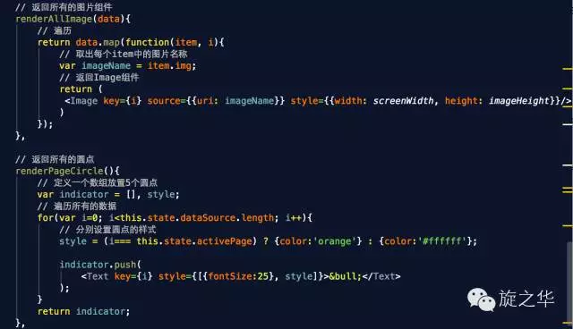
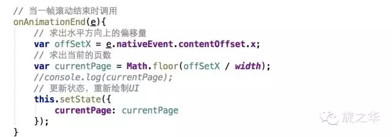
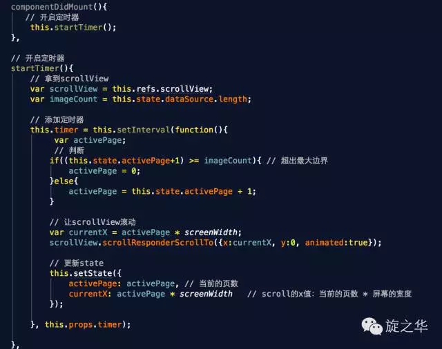

前言
从iOS开发的经验来看，scrollView无疑是移动开发中很重要的一个组件，比如后面会学到的ListView就是继承自它。那么，在开发中比如：焦点图、引导页等地方都有其的影子，那接下来我们一起来搞定它！
一个包装了平台的ScrollView（滚动视图）的组件，同时还集成了触摸锁定的“响应者”系统。
- 两个要点：
- ScrollView必须有一个确定的高度才能正常工作
它实际上所做的就是将一系列不确定高度的子组件装进一个确定高度的容器（通过滚动操作）。
通常有两种做法：
第一种： 直接给该ScrollView进行设置高度(不建议)；
第二种： ScrollView中不要加{flex:1}。 - ScrollView内部的其他响应者尚无法阻止ScrollView本身成为响应者
- ScrollView必须有一个确定的高度才能正常工作
ScrollView中常用的属性
contentContainerStyle StyleSheetPropType(ViewStylePropTypes)
这些样式会应用到一个内层的内容容器上，所有的子视图都会包裹在内容容器内。
horizontal bool
当此属性为true的时候，所有的的子视图会在水平方向上排成一行，而不是默认的在垂直方向上排成一列。默认值为false。
keyboardDismissMode
enum(‘none’, “interactive”, ‘on-drag’)
用户拖拽滚动视图的时候，是否要隐藏软键盘。
none（默认值），拖拽时不隐藏软键盘。on-drag当拖拽开始的时候隐藏软键盘。
interactive软键盘伴随拖拽操作同步地消失，并且如果往上滑动会恢复键盘。安卓设备上不支持这个选项，会表现的和none一样。
keyboardShouldPersistTaps bool
当此属性为false的时候，在软键盘激活之后，点击焦点文本输入框以外的地方，键盘就会隐藏。如果为true，滚动视图不会响应点击操作，并且键盘不会自动消失。默认值为false。
onScroll function
在滚动的过程中，每帧最多调用一次此回调函数。调用的频率可以用scrollEventThrottle属性来控制。
refreshControl element
指定RefreshControl组件，用于为ScrollView提供下拉刷新功能。
removeClippedSubviews bool
（实验特性）：当此属性为true时，屏幕之外的子视图（子视图的overflow样式需要设为hidden）会被移除。这个可以提升大列表的滚动性能。默认值为true。
showsHorizontalScrollIndicator bool
当此属性为true的时候，显示一个水平方向的滚动条。
showsVerticalScrollIndicator bool
当此属性为true的时候，显示一个垂直方向的滚动条。
alwaysBounceHorizontal bool
当此属性为true时，水平方向即使内容比滚动视图本身还要小，也可以弹性地拉动一截。当horizontal={true}时默认值为true，否则为false。
ios alwaysBounceVertical bool
当此属性为true时，垂直方向即使内容比滚动视图本身还要小，也可以弹性地拉动一截。当horizontal={true}时默认值为false，否则为true。
ios``automaticallyAdjustContentInsets bool
如果滚动视图放在一个导航条或者工具条后面的时候，iOS系统是否要自动调整内容的范围。默认值为true。（译注：如果你的ScrollView或ListView的头部出现莫名其妙的空白，尝试将此属性置为false）
ios``bounces bool
当值为true时，如果内容范围比滚动视图本身大，在到达内容末尾的时候，可以弹性地拉动一截。如果为false，尾部的所有弹性都会被禁用，即使alwaysBounce*属性为true。默认值为true。
ios``bouncesZoom bool
当值为true时，使用手势缩放内容可以超过min/max的限制，然后在手指抬起之后弹回min/max的缩放比例。否则的话，缩放不能超过限制。
ios``canCancelContentTouches bool
当值为false时，一旦有子节点响应触摸操作，即使手指开始移动也不会拖动滚动视图。默认值为true（在以上情况下可以拖动滚动视图。）
ios``centerContent bool
当值为true时，如果滚动视图的内容比视图本身小，则会自动把内容居中放置。当内容比滚动视图大的时候，此属性没有作用。默认值为false。
ios``contentInset
{top: number, left: number, bottom: number, right: number}
内容范围相对滚动视图边缘的坐标。默认为{0, 0, 0, 0}。
ios``contentOffset PointPropType
用来手动设置初始的滚动坐标。默认值为{x: 0, y: 0}。
ios``decelerationRate number
一个浮点数，用于决定当用户抬起手指之后，滚动视图减速停下的速度。常见的选项有：
Normal: 0.998 (默认值)
Fast: 0.9
ios``directionalLockEnabled bool
当值为真时，滚动视图在拖拽的时候会锁定只有垂直或水平方向可以滚动。默认值为false。
ios``maximumZoomScale number
允许的最大缩放比例。默认值为1.0。
ios``minimumZoomScale number
允许的最小缩放比例。默认值为1.0。
ios``onRefreshStart function
已过期
请使用refreshControl 属性代替。
ios``onScrollAnimationEnd function
当滚动动画结束之后调用此回调。
ios``pagingEnabled bool
当值为true时，滚动条会停在滚动视图的尺寸的整数倍位置。这个可以用在水平分页上。默认值为false。
ios``scrollEnabled bool
当值为false的时候，内容不能滚动，默认值为true。
ios``scrollEventThrottle number
这个属性控制在滚动过程中，scroll事件被调用的频率（单位是每秒事件数量）。更大的数值能够更及时的跟踪滚动位置，不过可能会带来性能问题，因为更多的信息会通过bridge传递。默认值为0，意味着每次视图被滚动，scroll事件只会被调用一次。
ios``scrollIndicatorInsets
{top: number, left: number, bottom: number, right: number}
决定滚动条距离视图边缘的坐标。这个值应该和contentInset一样。默认值为{0, 0, 0, 0}。
ios``scrollsToTop bool
当此值为true时，点击状态栏的时候视图会滚动到顶部。默认值为true。
ios``snapToAlignment
enum(‘start’, “center”, ‘end’)
当设置了snapToInterval，snapToAlignment会定义停驻点与滚动视图之间的关系。
start (默认) 会将停驻点对齐在左侧（水平）或顶部（垂直）
center 会将停驻点对齐到中间
end 会将停驻点对齐到右侧（水平）或底部（垂直）
ios``snapToInterval number
当设置了此属性时，会让滚动视图滚动停止后，停止在snapToInterval的倍数的位置。这可以在一些子视图比滚动视图本身小的时候用于实现分页显示。与snapToAlignment组合使用。
ios``stickyHeaderIndices [number]
一个子视图下标的数组，用于决定哪些成员会在滚动之后固定在屏幕顶端。举个例子，传递stickyHeaderIndices={[0]}会让第一个成员固定在滚动视图顶端。这个属性不能和horizontal={true}一起使用。
ios``zoomScalenumber
滚动视图内容初始的缩放比例。默认值为1.0。
OnMomentumScrollEnd function
当一帧滚动完毕的时候调用，e.nativeEvent.contentOffset。
onScrollBeginDrag fuction
当开始手动拖拽的时候调用。
onScrollEndDrag fuction
当结束手动拖拽的时候调用。
注意：ScrollView是继承自View，所以View中所有的属性同样适用于ScrollView。
Demo巩固练习
用scrollView实现轮播图效果
技术实现要点
需要导入计时器类库
npm i react-timer-mixin --save在项目中需要引入并注册：
`引入：var TimerMixin = require('react-timer-mixin')`
`注册：mixins: [TimerMixin]`
- 在上下文中拿到组件需要给组件绑定ref

根据上下文求出偏移量
e.nativeEvent.contentOffset.x;让scrollView根据偏移量进行滚动
1 | var currentX = activePage * screenWidth; |
详细代码截图如下
核心代码如下：




运行效果截图：
(本文转载自旋之华微信公众号)